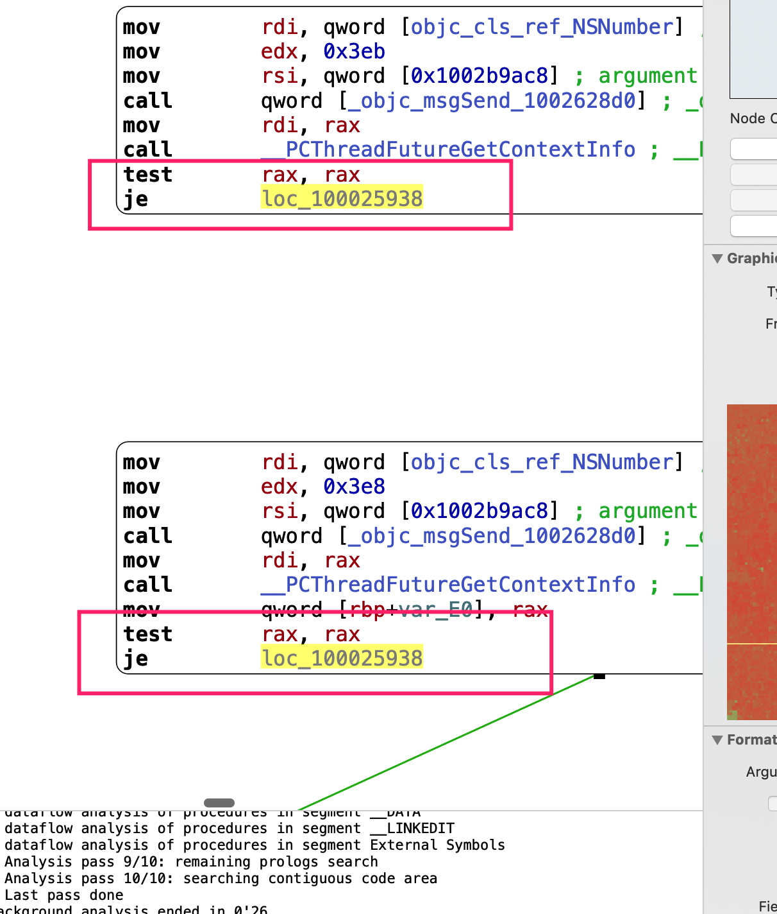

Continuing the tradition from 2017, the topic for my annual InfoSec related hackathon is code deobfuscation.
We will be focusing on x86_64 MachOs obfuscated by my 2017 christmas project only and ignore all multi-stage obfuscations to make this small toy project as trivial as possible. As there has been a ton of similar researches on solving such tasks with overkill weapons like symbolic execution and dynamic taint analysis (and because I’m extremely new to this field), I decided to take a purely static approach, as in we are not attempting to do much more than a traditional static decompiler. Here are some theories I designed that should be hopefully more than enough for our task. It’s suggested for the the reader to have some LLVM background prior to reading through this article, however LLVM is rarely mentioned and the reader should be able to guess the meaning of LLVM related part without too much hassle.
Passes
IndirectBranch
The open-source version is pretty trivial with regards to both its implementation and the solution to defeat it. To summerize, for each function, a table of all the BasicBlocks in this function is created and each unconditional br instruction is transformed into a sequence of getelementptr, load and br instructions. For each conditional br instruction, a local branching table is created and similar process is carried out. Since modern compilers and decompilers are really good at optimizing the first scenario, it’s as easy as statically finding such instruction patterns and patch them accordingly to deobfuscate such binaries. For the conditional part, things are a little bit trickier. However since the type signature of a conditional ranch instruction is actually br i1 BasicBlock True, BasicBlock False, such assembly binary patterns can only have the formula of (branch table address)+(0 or 1)*sizeof(address). Since all elements in this formula is statically calculatable by doing some disassembling, IndirectBranch is overall the easist obfucation to defeat.
BogusControlFlow
For this one, the general idea is to generate pseudo conditional branches backed by a compile time evaluated mathematical expression, which always evaluates to one side so we can insert junk instructions and do all kinds of crazy stuff on the other side.
In detail, the constants in this obfuscation are added as GlobalVariable to bypass LLVM’s compile time optimizations, because otherwise we might see some really awkward cases like this one found in Transmit App

So in order to defeat such obfuscations, the core idea is to find conditional jumps and for each of these instructions, we backtrace the control flow and do some dataflow analysis to find out how the final condition is evaluated. The final DFA should match the pattern that all involved values are loaded from a GlobalVariable that has only one cross reference (Our BasicBlock). From this point on we can:
- Simulate related instruction by hand
- Use a decent engine like Unicorn Engine
- Runtime Analysis (Cheating!) like generate LLDB scripts that break on those intructions and dump out the condition registers, they should have the same value in each run.
Flattening
This one is actually the hardest, however do note that in summary, all flattening does is create a temporary value on stack and a switch instruction that jumps to different BasicBlocks depending on the temporary value, the old BasicBlocks are modified so that after normal execution, they update the temporary value to indicate the next BasicBlock they want to execute and jump back to the switch instrucion. In order to deobfuscate this, we will need to find the BasicBlock containing the Switch Instruction, known as the dispatcher, and the bottom entirely useless block which does absolutely nothing except jumping back to the dispatcher. The second one is easy to find, from graph theory’s perspective, this BasicBlock has a large number of incoming edges and only one outgoing edge. The first one is usually the third BasicBlock we encounter into the function and if for some reason that didn’t work, switch table is still your friend : )
Now with the dispatcher sorted out, we can now locate the temporary value’s address on stack by analyzing the dispatcher and its parent block, from there we can check for instructions that write to the temporary value, which in turn allows us to recover the original CFG by associating the values written with the original CFG.
Implementation
However in order to implement these theories, we’ll need to first identify the BasicBlocks in the program, or in otherwords we are essentially rewriting our own disassembler, while Capstone Engine is dope enough and can handle more than a dozen instruction sets, Capstone at its core is nothing more than a linear disassembler. For modern binaries and disassemblers, we need a more advanced algorithm called Recursive Descent Disassembly, which is a lot more troublesome than it might sounds. So our first task as this point is to either craft our own disassembler or find another engine for this. The actual implementation is left to discuss in Part II that will hopefully come before Christmas Eve.